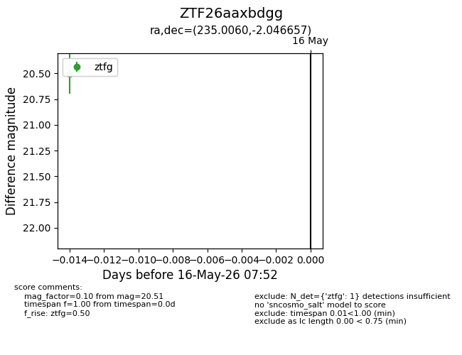
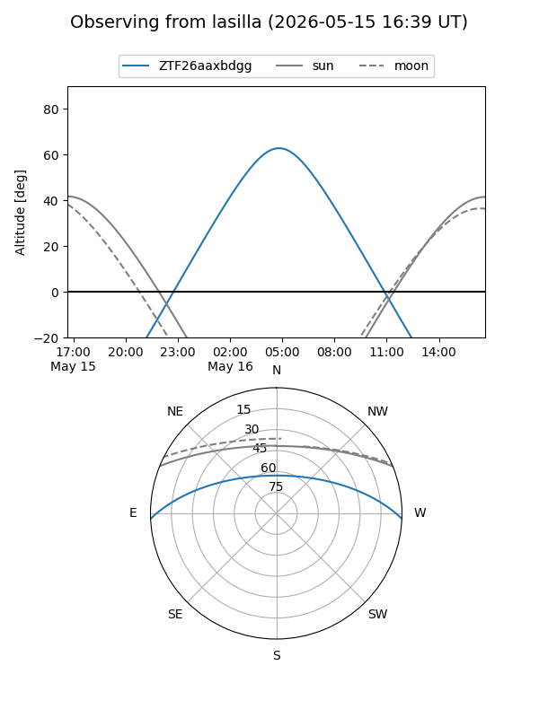
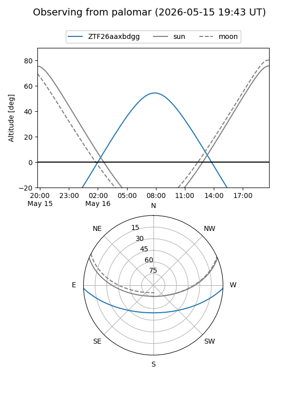

ZTF26aaxbdgg
Target ZTF26aaxbdgg at 2026-05-16 07:54
Aliases and brokers:
FINK: link
Lasair: link
ALeRCE: link
alt names
ZTF26aaxbdgg (ztf,fink_ztf)
Coordinates:
equatorial (ra, dec) = 235.0060,-2.04666
equatorial (HMS+DMS) = 15:40:01.44,-02:02:47.97
galactic (l, b) = (4.0674,+40.02782)
Flags:
Photometry:
last ztfg=20.51
1 ztfg detections
Lightcurve

Visibility


Additional plots